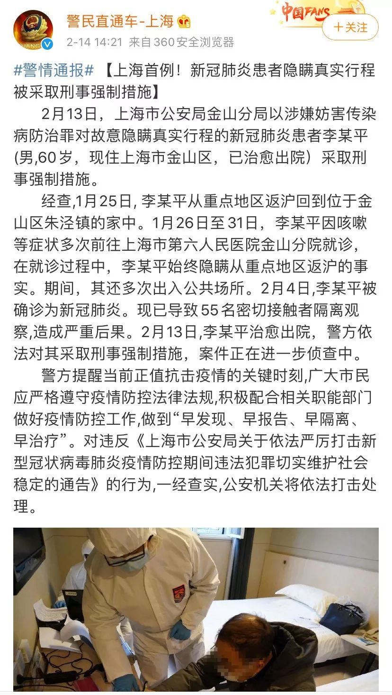
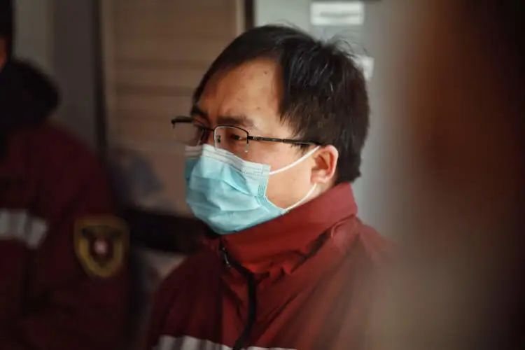
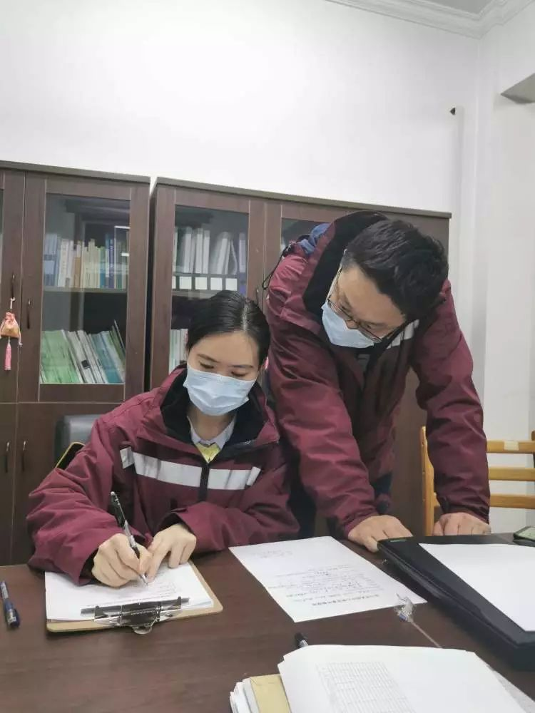

口述实录丨武汉早批参战医生：我得到的信息比别人多，承受的痛苦就比别人多
原文链接 备份链接 后来我回想，也挺后怕的。我接诊阿姨的时候，给她查体，她对着我咳嗽过。 口述 | 宋亚锋 整理 | 黄 祺 “突然听到一个消息，心情很不好，内心很恐惧，虽然根本不认识，但感觉很难过，一路走好，希望你的家人能够渡过难 …
以下文章来源于新闻晨报 ，作者孙立梅
[
新闻晨报
一网打尽新闻晨报当日重要新闻详细报道、晨报读者活动](#)
孙立梅/周到上海客户端
2月13日，上海市公安局金山分局以涉嫌妨害传染病防治罪，对故意隐瞒真实行程的新冠肺炎患者李某（男，60岁，现住上海市金山区，已治愈出院）采取刑事强制措施。这是此次疫情以来，上海第一起以涉嫌妨害传染病防治罪采取刑事强制措施的案件。
上海市公安局在通报中指出，李某在就诊过程中始终隐瞒从重点地区返沪的事实，还多次出入公共场所，导致55名密切接触者隔离观察，造成严重后果。

在对故意隐瞒者表示极大愤慨的同时，人们也非常好奇：这55名密切接触者，到底是怎么被圈定出来的呢？
金山区疾控中心传染病防制科科长宋灿磊回答了这个问题。

宋灿磊接受晨报专访，摄影 杨眉
包括宋灿磊在内，上海一大批流调（流行病学调查）人员，正奋战在疫情防控的前沿阵地上。从接到医院上报疑似病例开始，流调员们要迅速摸清其感染来源、活动轨迹、接触人群，并将密切接触者向其所在街道、社区进行通报，在第一时间采取隔离措施。
正是因为他们争分夺秒而又细致入微的工作，才使得上海市民可以在每日疫情通报中看到“确诊病例涉及区域和场所”的情况，以及“对查明的密切接触者已全部隔离医学观察，对已确诊病例的小区都已告知当地”的表述，从而对自己所居住的街区，所生活的城市，产生足够的安全感。
也正因为如此，有网友给流调员们取了一个酷酷的别称：猎毒者。

冒雨出征
流调标准有二：“最短时间”、“无一遗漏”
自1月20日上海出现首例确诊患者之日起，宋灿磊所在的金山区疾控中心，就开启了全天候的疫情防控模式。
疾控中心应急值班室里，24小时有流调人员在岗值班。
每接到一个疑似病例上报，流调员们都要迅速出动，向医院接诊医生了解病人情况，并按照工作流程，通过电话或面对面向隔离病房内的病人了解其个人基本情况、发病就诊情况、发病前后活动轨迹及可疑病例接触情况，判定密切接触人群，最终形成调查分析报告。
这是一场没有硝烟的战争。为了全面查找传染源，切断传播途径，流调员们每一次接报都如临大敌，严阵以待。
“一个病例从上报疑似，到实验室出第一次检测结果，一般在5-6个小时左右，留给我们的时间真的不多。我们最怕的，就是漏掉任何一个密切接触者。”

流调出发
宋灿磊说，无论上报病例的情况怎样复杂，“最短时间”和“无一遗漏”，是流调工作绝对不能打折扣的两大标准。因为只有在最短时间内追踪和提醒到每一位密切接触者，才能最大限度地保护一个乃至一大群人。
每个疑似病例都要做两次检测，两次结果均为阴性，疑似病例就可予以排除，之前调查到的密切接触者们也会被立刻通知到。这也等于说，宋灿磊们针对这一疑似病例的所有工作，其实是“白做”了。

金山区疾控中心实验室
而这样的“白做”，基本每天在发生。
金山区上报的首例疑似病例，是在1月25日，大年初一当晚。本区一家医院的发热门诊接诊两例从重点地区来沪探亲的夫妻，两人都有发热伴肺炎症状。宋灿磊和同事们在15分钟内出发前往医院，因为这对夫妻发病前后活动轨迹和人员接触情况很明确，调查相对比较顺利，但当宋灿磊整理完调查报告，也已经是大年初二凌晨了。
几个小时之后，第一次实验室检测结果出来，阴性。 第二次检测，仍为阴性，予以最终排除。

流调工作中
从1月25日开始，截至2月19日晚，金山区疾控中心总共收到58例医院上报的疑似案例，最终有3例确诊。
宋灿磊告诉晨报记者，他和同事们的每一次行动，都做好了打一场硬仗的准备。
“我们的工作性质非常特别。我们接到每个上报病例，都会全力以赴，严阵以待，但与此同时，从内心来说，我们也宁可每次到最后发现都是白忙，都是虚惊一场。当然，这对我们来说也是一种练兵，我们的工作能力、工作价值，都在这个过程中得到了展示。”
面对最复杂案例，进入隔离病房调查
现已被采取刑事强制措施的李某，是金山区3例确诊中的第二例，也是宋灿磊和同事们经手最为复杂的一例。
2月2日上午11:50，疾控中心的应急电话响起：某医院上报疑似病例李某，发热伴咳嗽、乏力及肺炎，有多日重点地区旅行史，且曾在该院多个科室就诊。
作为流调老兵的宋灿磊，敏感地意识到这可能不是一个普通病例，于是决定组建经验丰富的临时小组。12:10，疾控中心出动了总共6人的流调员队伍，其中包括市疾控中心派驻金山的两位专家。而之前的疑似病例调查，一般都是两个人一组。

物资核查
在医院了解到李某多日的就诊记录后，宋灿磊发现事态的严重性。
李某1月24日从江西南昌来到上海，住在松江某宾馆，当晚出现发冷症状，但认为“可能是自己被子盖少了”。
第二天，李某从松江打车回到金山家中，当天乘坐过出租车，去过一家便利店。
从1月26日起，李某先后去过医院呼吸内科、急诊科、中医内科、感染科等科室，几乎每天都在医院出没，但在医生询问流行病学史时，他只告诉医生自己是从江西南昌过来的。
李某就诊次数不寻常的增加，也引起医生的怀疑。在反复盘问之下，李某终于透露自己就在南昌之前，有过武汉、黄冈等地三四天的旅行史，于2月2日被送往发热门诊。
从1月24日发病，到2月2日进入发热门诊，李某连续多日与医护人员、其他病人、出租司机、宾馆服务员、超市员工等打过交道，而当时还不确定是否有更多可能的密切接触者。其时间跨度之长、接触人员之多、情况之复杂，令人瞠目。

信息核实
在李某之前，宋灿磊和同事们根据工作规范，主要是通过医院协助，与疑似病例通过电话了解情况。
“但李某的情况非常特殊。第一他60岁了，记忆力不太好，而且一个人居住，没有家属可以帮助回想；
第二他的活动轨迹复杂，而我们要求掌握每个时间点的活动轨迹，当中不能留白；
然后我们也了解到，之前社区向他了解情况的时候，他可能身体状态不太好，不太愿意配合。
在这种情况下，如果采取电话调查，效果可能是非常非常差的。所以我们最终决定，我和一位同事穿着二级防护服进入隔离病房，开展面对面调查。”
数十小时医院监控录像，不放过任何蛛丝马迹
作为非临床医务人员，进入隔离病房，与高度疑似病例面对面，当时是什么感觉？
“这肯定有心理压力的，尤其是刚进去的时候，确实会紧张一点。但随着面对面展开交流，压力是慢慢、慢慢释放的过程。
因为你越深入调查，你就觉得这个病例有意思，在一定程度上感觉这是一种工作的成就。我这么说是不是很怪？（笑）可能这就是一种专业的本能吧。到最后，情绪就完全松懈下来了。”
从2月2日下午1点半进入隔离病房开始，宋灿磊和同事在隔离病房待了将近两个小时，通过录音笔，记下了李某从发病之日起详细的活动轨迹和对应时间。
宋灿磊说，整个调查过程根本顾不上什么感觉，但调查结束脱掉防护服的时候，他和同事都发现衣服已经湿透了。
从医院出来，已经是2月2日下午3点半了。但，这场硬仗才只是刚刚开始。

宋灿磊，摄影 杨眉
宋灿磊接到区疫情防控指挥部的明确指令：密接者名单，必须在检测结果之前出来！而这份名单的分量和可能引发的后果，不言自明。
宋灿磊和同事们梳理了李某在过去十天的活动轨迹，做到每个时间点都有与之相对应的明确位置。院内部分，由医院配合疾控中心调取监控录像，一一排查；其他公共场所，则交由公安部门协助排查。
根据疾控中心的预测，发生在医院内的密切接触者将占绝大多数——后来的数据也证实了这一预测。最终被划定的55名密切接触者当中，发生在院内的就有47名。
疾控中心调取了李某就医每天的监控录像，加起来总共数十个小时。只要李某的身影在视频中出现，宋灿磊和同事们就点着鼠标一路追踪，对于在其周围约2米左右出现的人，再放大细查：李某和对方分别有没有佩戴口罩，医护人员是否做了足够的防护措施……

医院监控筛查
光是看监控录像，就用掉了4个多小时的时间。
“我们把每个相关的时间点都做了记录，特别是注意一些特殊举动。比如李某什么时间摘了口罩，在他摘口罩的过程中身边有几个人经过，这些人什么时间也摘了口罩，什么时间又戴上了。”
而在看过录像之后，宋灿磊的同事又到每个相关科室现场进行了复盘，确定通过视频估算的位置、距离等与密切接触者相关的数据，都与实际情况相符。
根据输液室位置图，再与监控一一对脸
医院最大的排查难点，出现在急诊科输液室。因为李某在其他科室停留的时间还比较短，接触人群还比较有限，但他曾经在两天内先后有两次输液，在输液室停留的时间超过两个小时，而这家医院的输液室有79个座位，本来就是人群密集的场所。
宋灿磊说，比较庆幸的是，他们详细问过医院，确认当时输液室的窗户是开着保持通风的，“按照国家和上海的要求，如果是密闭场所，那当时在场的所有病号都需要被隔离，那样的话人数就更多了。”
宋灿磊和同事们现场拍下并测量了输液室的位置图，最终以李某所在位置为中心，按照左右四个位置（约2米）、前后2排（约1.5米）以内，初步圈定密切接触者范围。现场距离较近且没有佩戴口罩的，也被纳入进来。
“除了看位置，我们还要确定输液室人来人往的情况。比如虽然不在李某附近坐，但有的病人可能在起身上厕所的时候经过李某身边，或者有短暂站在其身边的情况，这也可能是密接接触者。对于这种情况，我们还要追踪这些病人具体回到了哪个座位，然后记下座位号。”
在初步圈定院内密切接触者相关信息之后，医院迅速反馈了这些人的联系方式。疾控中心一一电话联系进行复查，比如询问对方当时佩戴的口罩类型，是否出现身体不适等。
“接到我们的询问电话，大多数人的第一反应都是很紧张的，这完全可以理解。所以在询问的同时，我们也注意做好安抚工作，但也告知对方先行做好居家隔离，等待进一步通知。”

流调车辆随时待命
2月2日晚11点，疾控中心已经完成了一份较为详细的流调报告。
在疾控中心紧锣密鼓工作的同时，公安部门也根据疾控中心提供的活动路线图迅速出手，最终划定了另外8名密切接触者，疾控中心对之进行了又一轮电话复查。
在李某的检验结果出来之前，金山区疫情防控指挥部手上，已经拿到了这55名密切接触者的名单。
这也是金山区3例确诊病例当中，密切接触者最多的一例。
值得庆幸的是，这55名密切接触者，目前都已经解除集中隔离，平安回到家中。
戳这里进入
“全国新型冠状病毒感染病例实时地图”↓↓↓

本期编辑 周玉华
推荐阅读


原文链接 备份链接 后来我回想，也挺后怕的。我接诊阿姨的时候，给她查体，她对着我咳嗽过。 口述 | 宋亚锋 整理 | 黄 祺 “突然听到一个消息，心情很不好，内心很恐惧，虽然根本不认识，但感觉很难过，一路走好，希望你的家人能够渡过难 …
原文链接 备份链接 澎湃新闻记者 薛莎莎 56岁的杨柳萍骑着电动车在前，同事毛蕊开着车在后面跟着。途中，杨柳萍多次“赶”毛蕊回家，让他不要跟着，“我不能坐你的车，我已经病倒了，你不能再倒下”。毛蕊放心不下，一直跟着，直到目送杨柳萍进医院。 …
原文链接 备份链接 澎湃新闻记者 韩雨亭 通讯员 李俊平 2月15日，武汉市汉口医院120急救站护士彭璟在一线抗疫已经30天，今天让她最高兴的一件事情是——“我终于痛痛快快地洗了一把脸。” 作为急诊室护士，30天来，她一直坚守在抗疫一线， …
原文链接 备份链接 郭琴（右）与同事。受访者供图 作者 杨杰 编辑 从玉华 新冠肺炎康复后，武汉大学中南医院的护士郭琴复工了。“看我站在那里，病人心安。”郭琴在自己躺过的隔离病床前，护理新的病人，“我的出现，即使不说什么，也是鼓励。” 短 …
原文链接 备份链接 “听武汉这边的同事说，每年的3到4月，这里的樱花开得非常漂亮，到时我们一起来看樱花啊？” “一定一定！” 配图 | golo 前 言 这是一场战争，在新年的伊始，爆发在每一个普通的、平凡的中国人身边。 这是我们的战争， …